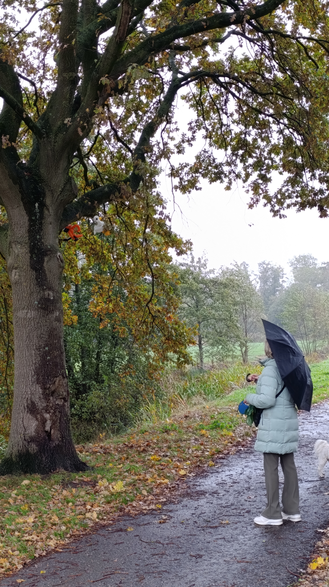
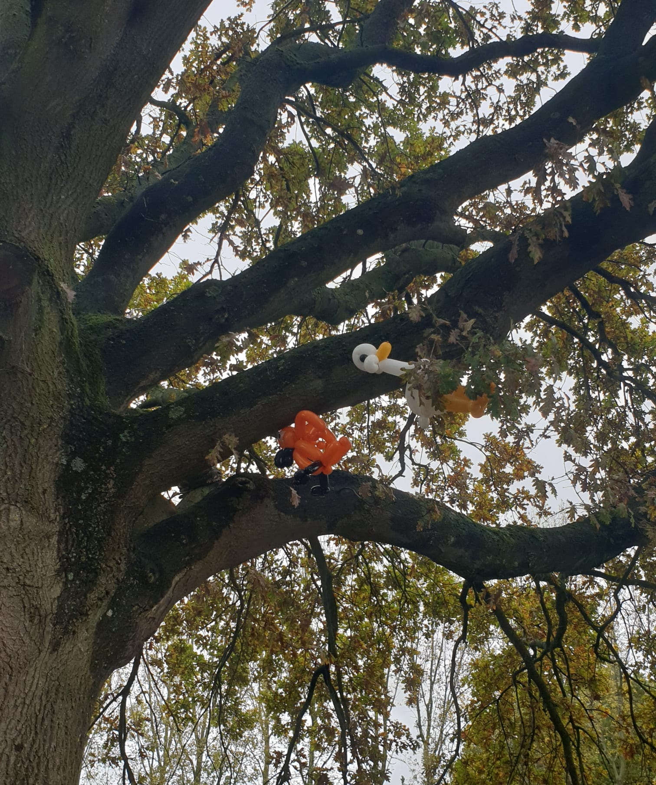
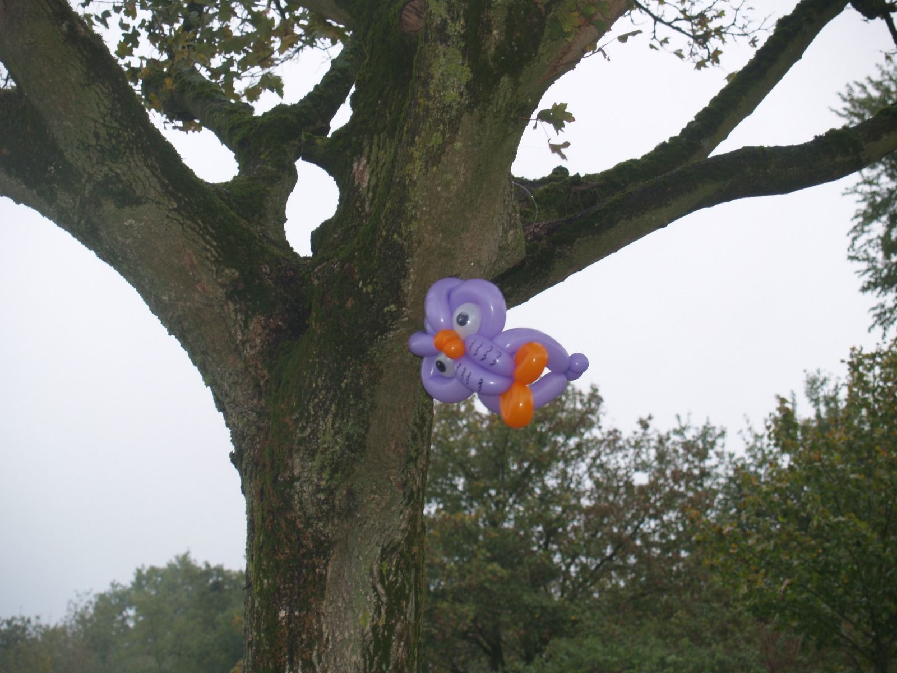

BalloonBirds
Projectbeschrijving
"Hoe kunnen we aandacht trekken naar de natuur en omgeving van de Asterdplas (Breda) zodat mensen er bij stilstaan
en het waarderen?" Zo luidde de onderzoeksvraag.
De oplossing? Ballondieren in de natuuromgeving plaatsen. De kleurrijke ballonvogels vangen de aandacht van mensen die erlangslopen.
Hierdoor zullen mensen de omgeving meer waarderen, en krijgt de omgeving meer betekenis voor de mensen, waardoor ze er vaker heen gaan en meer tijd zullen doorbrengen.
Hierdoor komt de plek weer tot leven.
Mijn rol
Ik heb geholpen met het ontwerpen van hoe het ontwerp eruit zou zien, en hoe het invloed zou hebben op de plek. Daarnaast heb ik bij een co-creatie sessie het onderdeel divergeren op me genomen.


